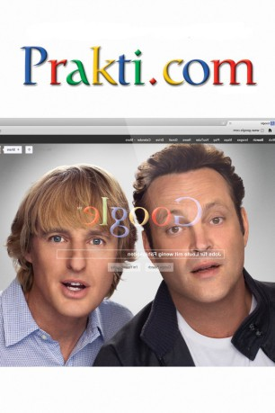
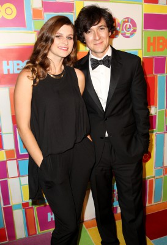
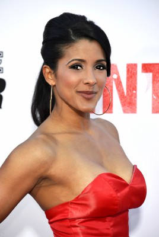
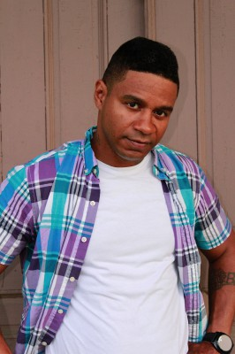

#742 Generation Praktikum
Alternativ: The Internship
 
 IMDB-Wertung: 6.3 / 10
IMDB-Wertung: 6.3 / 10  Metascore: 42
Metascore: 42 
Billy und Nick sind zwei Top-Verkäufer, die fest daran glaubten, dass sie durch harte Arbeit und Einhaltung der Regeln die Verheißungen des "Amerikanischen Traums" in jedem Fall erleben würden. Nun müssen sie feststellen, dass ihr eigenes Haltbarkeitsdatum quasi über Nacht abgelaufen ist, denn beiden wird fristlos gekündigt.\r Bei dem Versuch zu beweisen, dass sie nicht zum alten Eisen gehören, nutzen sie ihr Verhandlungsgeschick und ergattern zwei der heiß begehrten Praktikumsplätze bei Google - neben einem Heer von brillanten College-Studenten. Nun müssen sie es mit den begabtesten Elite-Studenten des Landes aufnehmen, Technik-affinen Genies und Computernerds.
Jahr: 2013
Dauer: 119 Minuten
FSK: 6
Land: USA Studio: 20th Century FoxTonspuren:
Untertitel: Deutsch,
Auflösung: 720p (1280x544) Größe: 2539 MB
Genre: Komödie
Regisseur: Shawn Levy
Drehbuch: Vince Vaughn, Jared Stern, Vince Vaughn
Soundtrack: Christophe Beck
Darsteller:
 Vince Vaughn als Billy McMahon
Vince Vaughn als Billy McMahon Owen Wilson als Nick Campbell
Owen Wilson als Nick Campbell Rose Byrne als Dana
Rose Byrne als Dana Aasif Mandvi als Mr. Chetty
Aasif Mandvi als Mr. Chetty Max Minghella als Graham Hawtrey
Max Minghella als Graham Hawtrey-  Josh Brener als Lyle
 Dylan O'Brien als Stuart
Dylan O'Brien als Stuart Tiya Sircar als Neha
Tiya Sircar als Neha- Tobit Raphael als Yo-Yo Santos
 Josh Gad als Headphones
Josh Gad als Headphones- Jessica Szohr als Marielena
 Rob Riggle als Randy
Rob Riggle als Randy Eric André als Sid
Eric André als Sid- Harvey Guillen als Zach
 Gary Anthony Williams als Bob Williams
Gary Anthony Williams als Bob Williams- Bruno Amato als Sal
- JoAnna Garcia Swisher als Megan
- Anna Enger als Eleanor
 Jill Jane Clements als Female Customer
Jill Jane Clements als Female Customer B.J. Novak als Male Interviewer
B.J. Novak als Male Interviewer Karen Ceesay als Female Interviewer
Karen Ceesay als Female Interviewer- Ashlee Heath als Jeanie
- Jarion Monroe als Not Professor X
 Brian F. Durkin als Club Douche
Brian F. Durkin als Club Douche- Clifton Guterman als Google Barista
- Chasty Ballesteros als Exotic Dancer #1
- Chuti Tiu als Yo-Yo's Mom
- Fel Tengonciang als Yo-Yo's Dad
-  Doris Morgado als Dry Cleaner Girl
- Molly Brady als Waitress Jennifer
- Zane Stephens als Frankie
- Jody Smith 'The Supertrainer' als Bouncer #1
- Wells Chen als Chinese Waiter
-  DuRa Brown als Strip Club Patron , uncredited
- Miracole Burns als Cosplay Bartender , uncredited
 Thomas Dalby als Chinatown Pedestrian , uncredited
Thomas Dalby als Chinatown Pedestrian , uncredited- Corey D. Dargan als Retirement Community Cargiver , uncredited
- Stephanie Davis als Tanya Koonz , uncredited
- Nick DeKay als Douchebag Friend , uncredited
- Patrick Engler als Chinatown Pedestrian , uncredited
- Troy Faruk als Douchebag Friend , uncredited
 Will Ferrell als Matress Salesman , uncredited
Will Ferrell als Matress Salesman , uncredited- Bentley Gates als Bartender , uncredited
- Claudia Gates als Waitress , uncredited
 Jeff Glover als Upscale Restaurant Patron / Pizza Parlor Patron / Googler , uncredited
Jeff Glover als Upscale Restaurant Patron / Pizza Parlor Patron / Googler , uncredited John Goodman als Nick and Billy's Boss , uncredited
John Goodman als Nick and Billy's Boss , uncredited- Johnny Land als Mark Rizzo , uncredited
- Michael D. Layden als 8 Year Old Nick , uncredited
 Shawn Levy als Nap Pod Guy , uncredited
Shawn Levy als Nap Pod Guy , uncredited- Liana Loggins als Model , uncredited
Datei: X:\2013(G-H)\Generation Praktikum (2013, FSK6, 1280x544).mkv seit 17.03.2015
Festplatte: HD 2012(N-Z)-2013(A-H)
 Es gibt insgesamt 43 Filme in der Gruppe '2013(G-H)'
Es gibt insgesamt 43 Filme in der Gruppe '2013(G-H)'